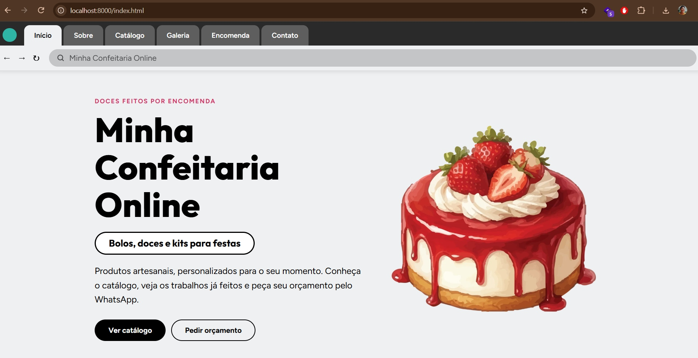
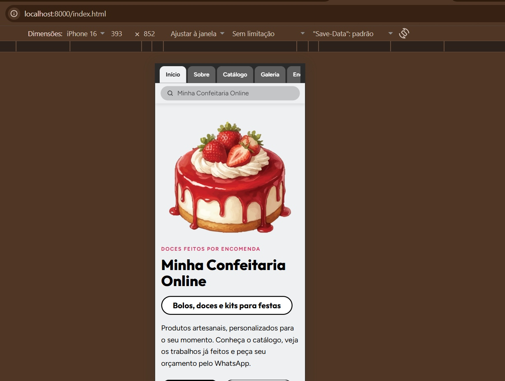
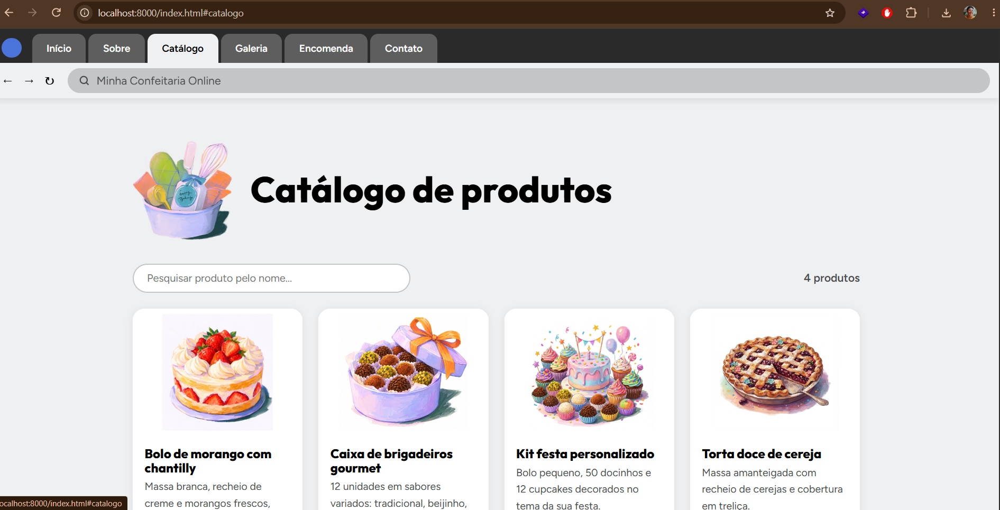
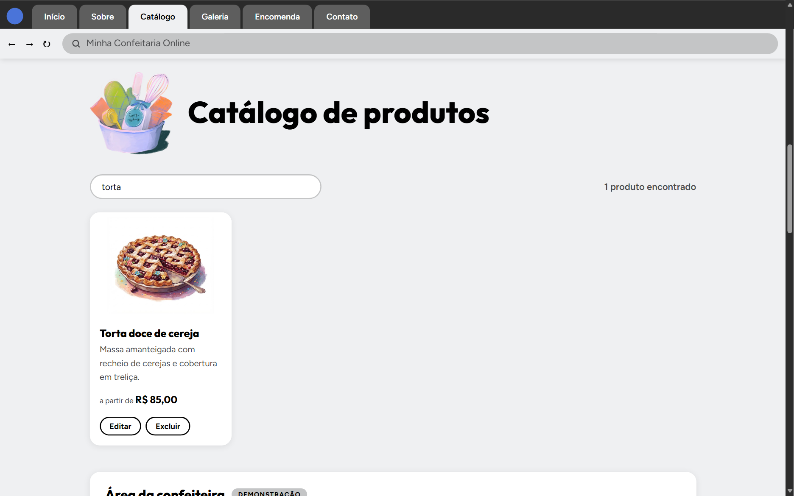
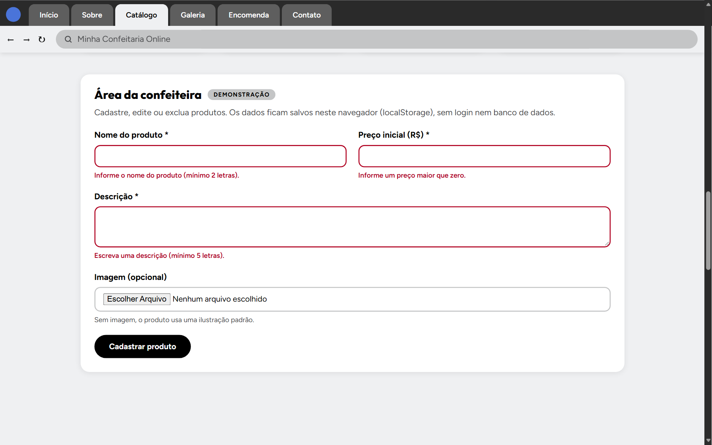
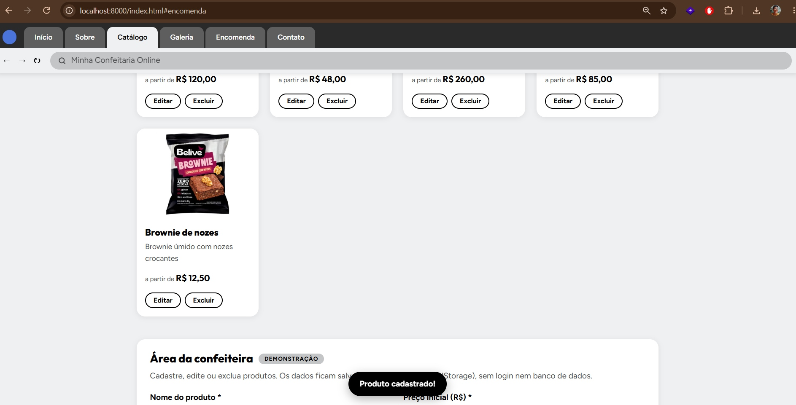
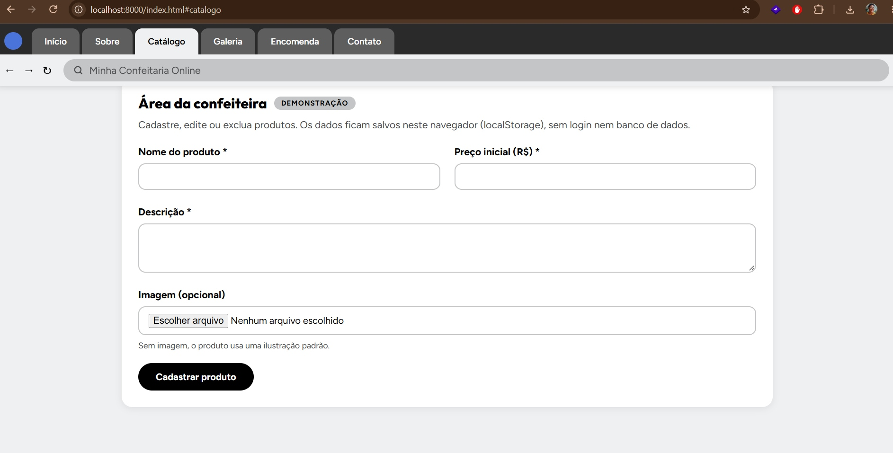
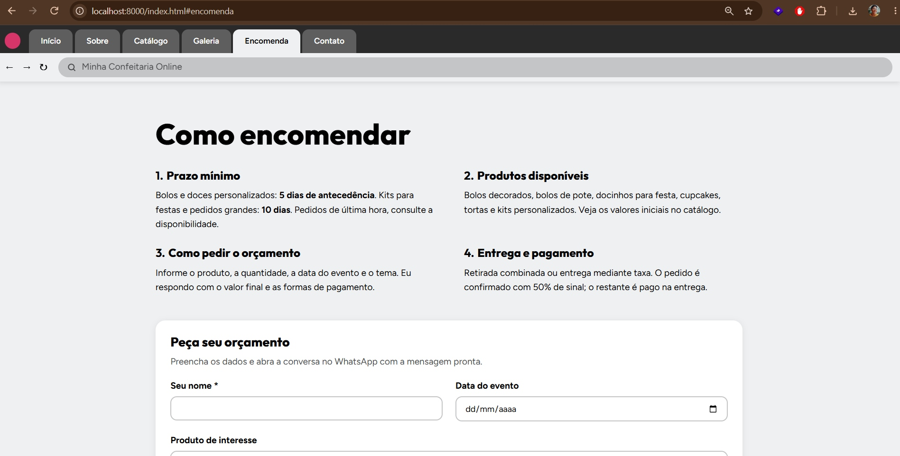
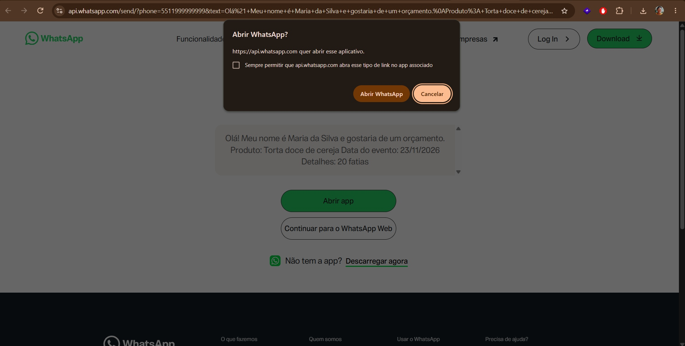

Grupo 37 · 2026 Desenvolvimento da Aplicação Web utilizando Boas Práticas de Desenvolvimento de Software
O problema
Confeiteiras e confeiteiros autônomos têm produtos, contato e encomendas espalhados em redes sociais e aplicativos de mensagem.
Falta um lugar profissional e organizado para se apresentar e mostrar o trabalho.
Clientes têm dúvidas sobre prazo, tipos de produto e como pedir orçamento.
A solução
Vitrine pública
Landing page responsiva que apresenta a confeiteira, o catálogo, a galeria de trabalhos e as informações para encomenda, com orçamento direto pelo WhatsApp.
Catálogo gerenciável
A própria confeiteira cadastra, lista, edita, exclui e pesquisa os produtos, sem login e sem banco de dados externo.
Público: confeiteiras autônomas e pessoas que querem encomendar bolos, doces e kits para festas.
Funcionalidades
Landing page
Gerenciamento do catálogo
Apresentação da confeiteira
Cadastrar produto (nome, descrição, preço e imagem)
Catálogo com imagem e preço
Listar produtos, com estado vazio
Galeria de trabalhos
Editar e excluir (com confirmação)
Informações para encomenda
Pesquisar por nome
Contato e orçamento pelo WhatsApp
Validação e avisos de sucesso/erro
Dados salvos no localStorage do navegador.
Tecnologias e estrutura
Tecnologias
HTML, CSS e JavaScript puros
localStorage para os dados
Git e GitHub para versionamento
Arquivos
index.html: estrutura
style.css: aparência
script.js: comportamento
img/: ilustrações
docs/: documentação
Telas: página inicial

Página inicial no computador

Página inicial no celular
Telas: catálogo e pesquisa

Catálogo de produtos

Pesquisa por nome
Telas: validação e feedback

Mensagens de erro junto aos campos

Aviso de sucesso ao cadastrar
Telas: edição e galeria
Edição de um produtoGaleria de trabalhos
Telas: cadastro e encomenda

Formulário de cadastro de produto

Como encomendar e pedido de orçamento
Teste manual: orçamento pelo WhatsApp

Ao clicar em Enviar pelo WhatsApp, abre a conversa com a mensagem pronta
Boas práticas aplicadas
Código
Separação entre HTML, CSS e JS; eventos por delegação, sem onclick no HTML.
Segurança e dados
Textos inseridos com textContent (contra XSS); try/catch no localStorage; cada produto com id.
Validação
Campos obrigatórios, trim, preço maior que zero e mensagens junto ao campo.
Acessibilidade
label em todos os campos, alt nas imagens, foco visível e avisos com aria-live.
Responsividade
Layout adaptado para computador e celular, conferido em 1366 px e 390 px.
Git
Branches por tipo de mudança, commits semânticos em português e registro de andamento no cronograma.
Upload de imagem, abas, teclado e abertura direta do arquivo testados no Edge, mais o envio pelo WhatsApp verificado à mão (5 aprovados) e capturas em 1366 px e 390 px. Tabela completa em docs/entrega/tabela-de-testes.md.
Bugs encontrados e corrigidos: imagens recortadas nos cards, produtos antigos sem imagem no navegador, inserção de texto com innerHTML (XSS) e plural errado no contador da pesquisa.
Tabela de testes (1 de 2)
ID
Caso de teste
Esperado
Obtido
Status
Evidência
CT01
Abrir a página pela primeira vez
4 produtos de exemplo, com imagem
4 cards; contador "4 produtos"
✅ Passou
CT02
Cadastrar um produto válido
Novo card e aviso de sucesso
5 cards; aviso "Produto cadastrado!"
✅ Passou
CT04
Enviar com o nome vazio
Não cadastra; erro junto ao campo
Erro exibido e nenhum card novo
✅ Passou
CT06
Informar preço zero
Rejeita com mensagem
"Informe um preço maior que zero."
✅ Passou
CM01
Cadastrar escolhendo uma imagem do computador
Foto reduzida e salva
480×439 px; continua após recarregar
✅ Passou
CT11
Editar o preço e salvar
Atualiza sem duplicar
4 cards; preço novo; "Produto atualizado!"
✅ Passou
Tabela de testes (2 de 2)
ID
Caso de teste
Esperado
Obtido
Status
Evidência
CT16
Pesquisar "torta"
Filtra e atualiza o contador
1 card; "1 produto encontrado"
✅ Passou
CM04
Clicar em Enviar pelo WhatsApp (verificado à mão)
Abre o WhatsApp com a mensagem pronta
Nova aba com a mensagem do pedido
✅ Passou
CV01
Abrir em 1366 px (computador)
Seções completas e legíveis
Todas as seções e imagens inteiras
✅ Passou
CV02
Abrir em 390 px (celular)
Uma coluna, sem rolagem lateral
Layout em uma coluna
✅ Passou
CT25
Pedir orçamento pelo formulário
Abre o WhatsApp com a mensagem pronta
Link com nome, produto, data e detalhes
✅ Passou
CT28
Imagens da página
Todas com texto alternativo (alt)
Nenhuma imagem sem alt
✅ Passou
Tabela completa: 30 testes automatizados, 2 visuais e 5 em navegador real ou à mão, todos aprovados. Detalhes em docs/entrega/tabela-de-testes.md.
Limitações e próximos passos
Os dados ficam só no navegador de quem usa; não há login nem sincronização entre aparelhos.
Próximo passo: cadastro e listagem de clientes e encomendas.
Publicação (hospedagem) ainda não definida nesta etapa.
Textos, preços e contatos são de exemplo, para fins acadêmicos.